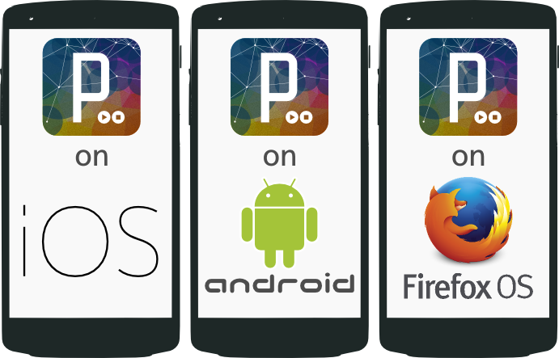
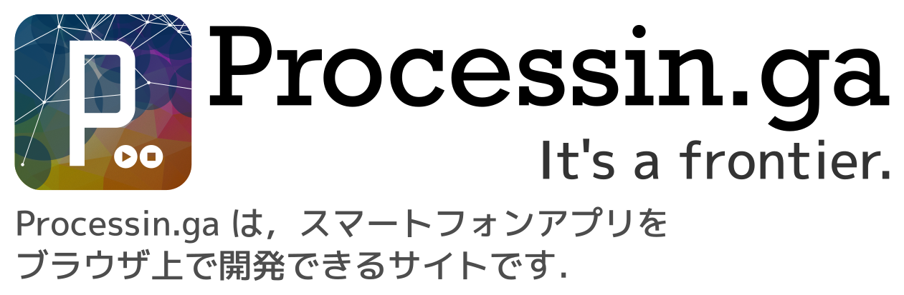
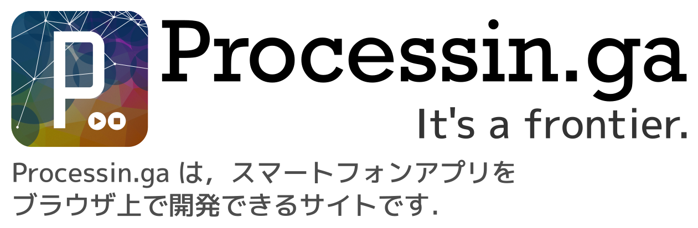

スマートフォンで動くアプリケーションをProcessing.jsで作れます．
ブラウザからエディタを開いてスマートフォンと同期させることで，
Processing.jsのコードを実行できます．
もちろん3Dも描画できます．
size(displayWidth, displayHeight, P3D);
書いたコードは保存できます．
公開設定にすれば，友達に自分のアプリケーションを見せることができます．